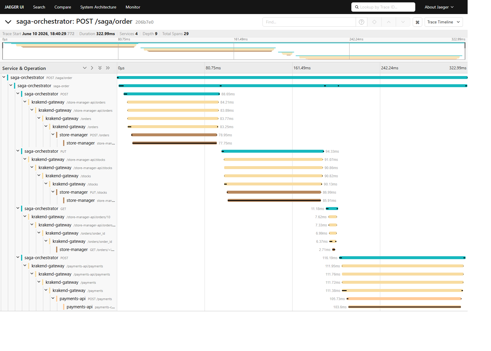
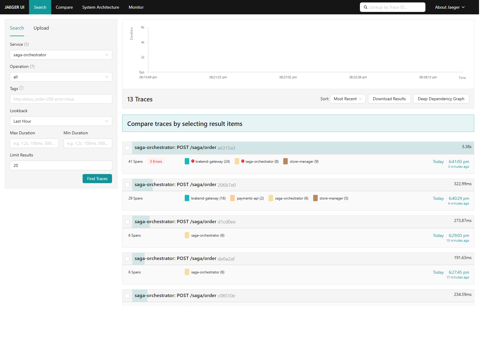
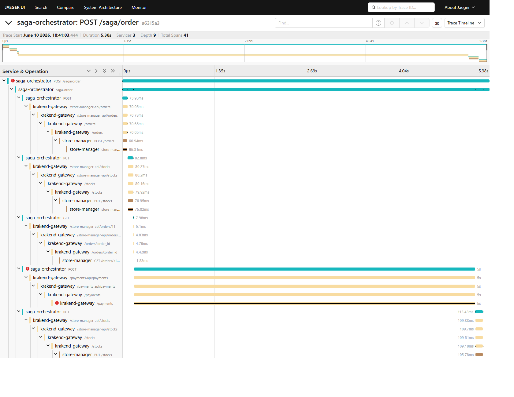

LOG430-02 — Architecture logicielle, École de technologie supérieure (ÉTS)
| Chargé de laboratoire | Gabriel C. Ullmann |
| Étudiant | Ralph Christian Gabriel |
| Code permanent | GABR77340401 |
| Session | Été 2026 |
| Application | Store Manager (suite du Labo 03) |
| Date des mesures | 2026-06-10 |
| Dépôt principal | log430-labo6-saga-orchestrator |
| Services impliqués | saga-orchestrator (5123), store-manager (5000), payments-api (5009), api-gateway KrakenD (8080), Jaeger (16686) |
| Patron implémenté | Saga avec orchestration centralisée + machine à états + compensation (rollback) |
| Observabilité | OpenTelemetry → Jaeger (tracing distribué sur les 3 microservices + la Gateway) |
src/controllers/order_saga_controller.py représente la machine à états. C'est lui qui détient l'état courant (self.current_saga_state), exécute la boucle de transitions et décide quel Handler appeler pour chaque état. Les états eux-mêmes sont définis dans src/order_saga_state.py (l'énumération OrderSagaState), et chaque transition est réalisée par une classe Handler.
Dans le gabarit fourni, l'implémentation était incomplète : seul l'état initial (START → CreateOrder) était fonctionnel. Les transitions DecreaseStock, CreatePayment et DeleteOrder n'étaient pas branchées, et l'état STOCK_INCREASED ne faisait qu'un commentaire TODO au lieu d'appeler DeleteOrderHandler. Extrait du gabarit original :
elif self.current_saga_state == OrderSagaState.STOCK_INCREASED: self.logger.debug("TODO: implémentez et utilisez la classe DeleteOrderHandler ...") self.current_saga_state = OrderSagaState.ORDER_DELETED
La boucle d'états (machine à états) telle qu'elle existe après implémentation complète :
while self.current_saga_state is not OrderSagaState.END: if self.current_saga_state == OrderSagaState.START: self.current_saga_state = self.create_order_handler.run() elif self.current_saga_state == OrderSagaState.ORDER_CREATED: self.decrease_stock_handler = DecreaseStockHandler(self.create_order_handler.order_id, order_data['items']) self.current_saga_state = self.decrease_stock_handler.run() if self.current_saga_state == OrderSagaState.ORDER_DELETED: self.is_error_occurred = True elif self.current_saga_state == OrderSagaState.STOCK_DECREASED: self.create_payment_handler = CreatePaymentHandler(self.create_order_handler.order_id, order_data) self.current_saga_state = self.create_payment_handler.run() elif self.current_saga_state == OrderSagaState.STOCK_INCREASED: self.is_error_occurred = True self.delete_order_handler = DeleteOrderHandler(self.create_order_handler.order_id) self.current_saga_state = self.delete_order_handler.run() elif self.current_saga_state is OrderSagaState.PAYMENT_CREATED or self.current_saga_state is OrderSagaState.ORDER_DELETED: self.current_saga_state = OrderSagaState.ENDCette boucle correspond exactement au diagramme de machine à états (
state_machine.puml) : chaque elif est un état, chaque appel de Handler est une transition.
CreateOrderHandler ne touche jamais une base de données. Il effectue uniquement un appel HTTP REST vers le Store Manager via l'API Gateway (KrakenD). C'est le Store Manager qui possède la logique d'accès à MySQL/Redis. Extrait de src/handlers/create_order_handler.py :
def run(self): """Call StoreManager to create order""" response = requests.post(f'{config.API_GATEWAY_URL}/store-manager-api/orders', json=self.order_data, headers={'Content-Type': 'application/json'} ) if response.ok: data = response.json() self.order_id = data['order_id'] if data else 0 return OrderSagaState.ORDER_CREATEDL'orchestrateur reste donc découplé des bases de données : il ne fait que coordonner des services. Aucune dépendance d'accès aux données (
mysql.connector, SQLAlchemy, redis) n'apparaît dans le requirements.txt de l'orchestrateur — uniquement Flask, requests, et les paquets OpenTelemetry pour le tracing.
CreateOrderHandler appelle POST {{gateway}}/store-manager-api/orders, que KrakenD route vers le backend POST http://store_manager:5000/orders. Dans la collection Postman du Store Manager (docs/collections/store_manager.json), cela correspond à la requête « Orders / /orders » (méthode POST) :
| Requête Postman (Labo 05) | Méthode | URL | Corps |
|---|---|---|---|
| Orders / /orders | POST | {{baseURL}}/orders | { "user_id": 1, "items": [...] } |
krakend.json) confirme la correspondance Gateway → backend :
{
"endpoint": "/store-manager-api/orders", "method": "POST",
"backend": [{ "url_pattern": "/orders", "host": ["http://store_manager:5000"] }]
}
En appelant POST localhost:5123/saga/order, on obtient exactement la séquence d'états attendue par le document arc42 :
Controller - DEBUG - État initial Handler - DEBUG - Transition d'état: CreateOrder -> ORDER_CREATED Handler - DEBUG - Transition d'état: DecreaseStock -> STOCK_DECREASED Handler - DEBUG - Transition d'état: CreatePayment -> PAYMENT_CREATED Controller - DEBUG - Transition à l'état terminal "POST /saga/order HTTP/1.1" 200
PUT {{gateway}}/store-manager-api/stocks (routé vers PUT http://store_manager:5000/stocks). J'ai utilisé la liste des articles de la commande (order_item_data = items, c.-à-d. product_id + quantity) avec l'opération "-" pour retirer du stock. Pour la compensation (rollback), j'utilise l'ID de la commande afin de la supprimer. Extrait de src/handlers/decrease_stock_handler.py :
def run(self): response = requests.put(f'{config.API_GATEWAY_URL}/store-manager-api/stocks', json={ "items": self.order_item_data, "operation": "-" }, headers={'Content-Type': 'application/json'}) if response.ok: return OrderSagaState.STOCK_DECREASED else: return self.rollback() def rollback(self): # Compensation : la commande a déjà été créée → on la supprime via son ID requests.delete(f'{config.API_GATEWAY_URL}/store-manager-api/orders/{self.order_id}', headers={'Content-Type': 'application/json'}) return OrderSagaState.ORDER_DELETEDVérification (stock du produit 2, avant/après une commande de quantité 5) :
| Produit | Stock avant | Stock après DecreaseStock |
|---|---|---|
| 2 (Keyboard DEF) | 500 | 495 |
1 → 5 (DecreaseStockFailure) du diagramme est respectée : si le retrait de stock échoue, la commande est supprimée et la saga passe à ORDER_DELETED.
GET {{gateway}}/store-manager-api/orders/{order_id} pour obtenir son total_amount. (2) Je crée ensuite la transaction via POST {{gateway}}/payments-api/payments (routé vers http://payments_api:5009/payments) en envoyant user_id, order_id et total_amount. Extrait de src/handlers/create_payment_handler.py :
def run(self): # 1) Récupérer le total_amount de la commande order_response = requests.get(f'{config.API_GATEWAY_URL}/store-manager-api/orders/{self.order_id}', ...) order = order_response.json() or {} self.total_amount = order.get('total_amount', 0) # 2) Créer la transaction de paiement payment_response = requests.post(f'{config.API_GATEWAY_URL}/payments-api/payments', json={ "user_id": self.order_data.get('user_id'), "order_id": self.order_id, "total_amount": self.total_amount }, ...) if payment_response.ok: return OrderSagaState.PAYMENT_CREATED else: return self.rollback() def rollback(self): # Compensation : on remet en stock (opération "+") les articles retirés requests.put(f'{config.API_GATEWAY_URL}/store-manager-api/stocks', json={"items": self.order_data.get('items', []), "operation": "+"}, ...) return OrderSagaState.STOCK_INCREASEDVérification : pour une commande (produit 3 ×2, produit 2 ×4) le Store Manager calcule
total_amount = 249.50, et la transaction de paiement créée dans payments-api porte bien order_id=1, total_amount=249.50. La transition 2 → 4 (CreatePaymentFailure) est respectée : en cas d'échec, le stock est restauré et la saga passe à STOCK_INCREASED.
DeleteOrderHandler est le seul handler déclenché uniquement en cas d'erreur ; il n'effectue que la suppression de la commande et n'a pas de rollback (conforme au diagramme). Il est appelé depuis le contrôleur à l'état STOCK_INCREASED (transition 4 → 5 : DeleteOrder). Extrait de src/handlers/delete_order_handler.py :
def run(self): # Supprime la commande via son ID (transition 4 -> 5 du diagramme) requests.delete(f'{config.API_GATEWAY_URL}/store-manager-api/orders/{self.order_id}', headers={'Content-Type': 'application/json'}) return OrderSagaState.ORDER_DELETEDEt son branchement dans
order_saga_controller.py (l'appel manquant du gabarit) :
elif self.current_saga_state == OrderSagaState.STOCK_INCREASED: self.is_error_occurred = True self.delete_order_handler = DeleteOrderHandler(self.create_order_handler.order_id) self.current_saga_state = self.delete_order_handler.run()
rollback() est encapsulé dans un try/except qui journalise l'erreur et poursuit vers l'état suivant jusqu'à l'état terminal.jaeger au docker-compose.yml de l'orchestrateur, ajouté les 5 dépendances OpenTelemetry aux requirements.txt des 3 services, et instrumenté chacun d'eux (orchestrateur, store-manager, payments-api). KrakenD est configuré pour exporter ses traces vers Jaeger et propager le contexte (input_headers: ["*"] + bloc telemetry/opentelemetry). Configuration OTel commune (exemple, orchestrateur) :
resource = Resource.create({"service.name": "saga-orchestrator", "service.version": "1.0.0"})
trace.set_tracer_provider(TracerProvider(resource=resource))
tracer = trace.get_tracer(__name__)
otlp_exporter = OTLPSpanExporter(endpoint="http://jaeger:4317", insecure=True)
trace.get_tracer_provider().add_span_processor(BatchSpanProcessor(otlp_exporter))
FlaskInstrumentor().instrument_app(app) # instrumentation auto de Flask
RequestsInstrumentor().instrument() # instrumentation auto des appels sortants
@app.post('/saga/order')
def saga_order():
with tracer.start_as_current_span("saga-order"): # span explicite
...
03), que la Gateway ignore. La trace de l'orchestrateur restait donc isolée. La correction consiste à fixer les paquets OTel à une version émettant le flag 01 et à activer OTEL_PROPAGATORS=tracecontext,baggage sur KrakenD. Après cela, une seule trace relie les 4 services.
Figure 1 — Trace distribuée d'une saga nominale : 4 services, 9 niveaux de profondeur, 29 spans. On voit le flux complet
saga-orchestrator → krakend-gateway → store-manager (POST /orders, PUT /stocks, GET /orders) puis → payments-api (POST /payments), le tout dans une seule trace liée.

Figure 2 — La liste des traces montre, pour chaque saga, la répartition des spans par service (krakend-gateway, payments-api, saga-orchestrator, store-manager). La trace en échec apparaît avec « 3 Errors ».
POST /saga/order) centralise toute cette logique : le client fait un seul appel, et l'orchestrateur garantit l'atomicité logique (tout réussit, ou tout est compensé).
| Approche | Avantages | Inconvénients |
|---|---|---|
Orchestrateur SagaPOST /saga/order |
• Cohérence garantie (compensation automatique) • Logique centralisée et réutilisable • Client simple (1 appel) • Observabilité d'un flux de bout en bout |
• Point de défaillance unique (l'orchestrateur) • Couplage temporel (appels synchrones) • Latence cumulée des étapes |
| Appels directs aux 3 services |
• Moins de composants • Latence d'un appel isolé plus faible |
• Risque d'état incohérent en cas d'échec partiel • Logique de coordination dupliquée chez chaque client • Compensation manuelle et fragile |
| Service | Vérification | Résultat |
|---|---|---|
| store-manager | Commande créée (MySQL + Redis) | order_id=10, total_amount=59.50 |
| store-manager | Stock décrémenté | produit 2 : 500 → 495 → … cohérent |
| payments-api | Transaction de paiement | order_id correspondant, total_amount correct |
| Jaeger | Trace de bout en bout | 4 services, 29 spans (Figure 1) |
payments-api puis en appelant la saga, l'étape CreatePayment échoue (HTTP 500 renvoyé par la Gateway). La saga déclenche alors la compensation : restauration du stock (STOCK_INCREASED) puis suppression de la commande (DeleteOrder → ORDER_DELETED), exactement comme dans le diagramme. Logs observés :
Controller - DEBUG - État initial Handler - DEBUG - Transition d'état: CreateOrder -> ORDER_CREATED Handler - DEBUG - Transition d'état: DecreaseStock -> STOCK_DECREASED Handler - ERROR - CreatePayment a échoué : 500 Handler - DEBUG - Transition d'état: CreatePaymentFailure -> STOCK_INCREASED Handler - DEBUG - Transition d'état: DeleteOrder -> ORDER_DELETED Controller - DEBUG - Transition à l'état terminal "POST /saga/order HTTP/1.1" 500Effets vérifiés (la commande est annulée, le stock revient à son état initial) :
| Élément | Avant compensation | Après compensation |
|---|---|---|
| Commande (order_id=11) | créée | supprimée (MySQL + API renvoie {}) |
| Stock produit 2 | 495 (décrémenté) | 495 (restauré, net nul) |
| Réponse HTTP | — | 500 + message d'erreur |

Figure 3 — Trace d'une saga en échec (41 spans, 3 erreurs). Les marqueurs rouges ⊘ signalent l'échec de POST /payments (timeout 5 s, service arrêté). On voit ensuite la transition de compensation PUT /store-manager-api/stocks (remise en stock) puis la suppression de la commande, le tout tracé de bout en bout.